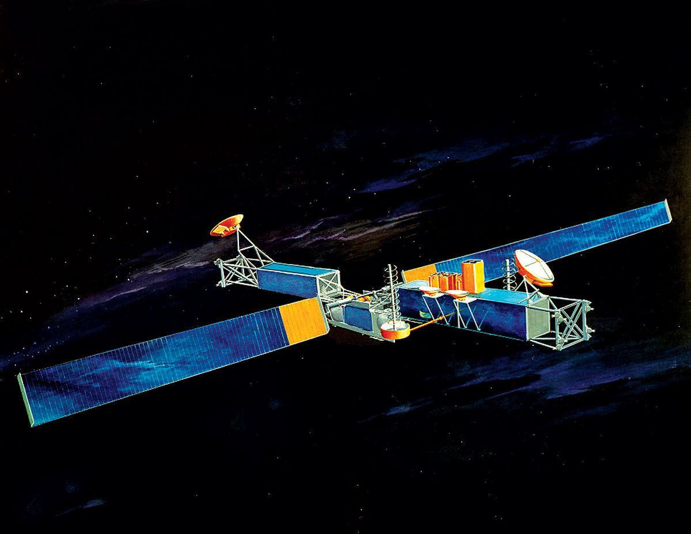
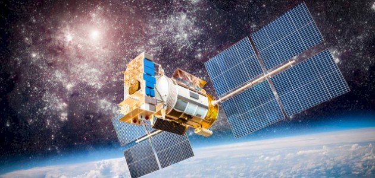
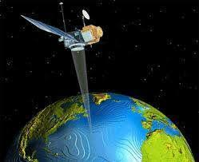
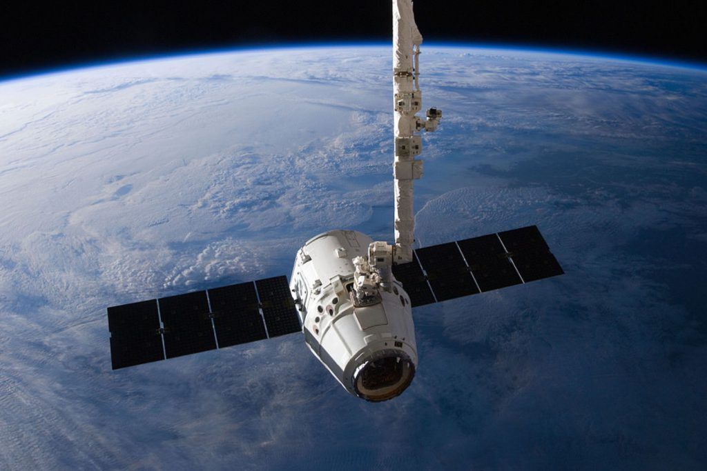
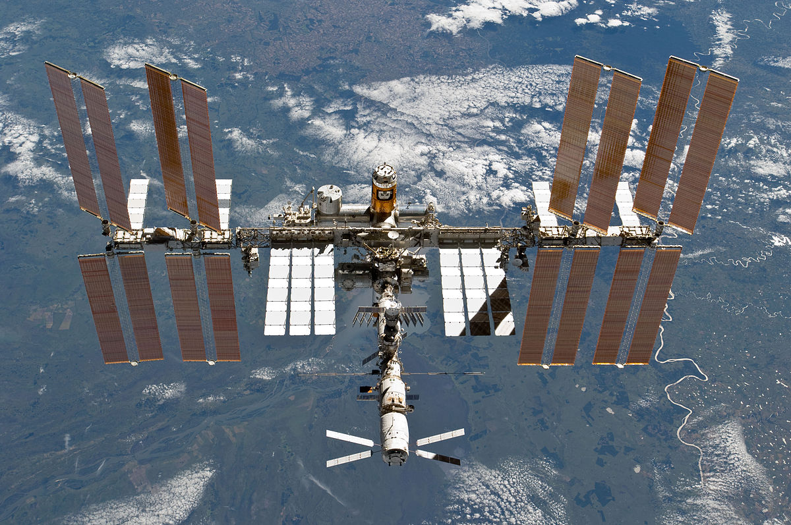

رحلة تطور الأقمار الصناعية من 1960 إلى الآن
هذا الموقع هو دليلك الشامل لاستكشاف عالم الأقمار الصناعية وفهم تطورها التاريخي وأنواعها المختلفة. تعرف على كيفية تطور هذه التقنية المذهلة منذ بداياتها وحتى يومنا هذا.

تستخدم لنقل إشارات الاتصالات (الهاتف، الإنترنت، البث التلفزيوني) حول العالم. من أشهر الأمثلة عليها أقمار إنتلسات وإنمارسات وستارلينك.

تستخدم لتحديد المواقع على سطح الأرض، مثل نظام تحديد المواقع العالمي (GPS) الأمريكي ونظام GLONASS الروسي ونظام Galileo الأوروبي.

تستخدم لمراقبة سطح الأرض لأغراض مختلفة مثل رصد الطقس، ومراقبة الموارد الطبيعية، ودراسة التغيرات البيئية والاستخدامات العسكرية.

تستخدم لمراقبة الطقس والمناخ العالمي، وتساعد في التنبؤ بالأحوال الجوية والكوارث الطبيعية مثل الأعاصير والفيضانات والحرائق.
تستخدم في الدراسات والأبحاث العلمية، مثل تلسكوب هابل الفضائي الذي يدرس الكون، وأقمار مراقبة الأشعة السينية والأشعة تحت الحمراء.

مثل محطة الفضاء الدولية (ISS)، وهي منشآت ضخمة تدور حول الأرض وتستضيف رواد الفضاء لإجراء التجارب والأبحاث في بيئة الجاذبية الصغرى.
شهدت هذه الفترة الخطوات الأولى في استكشاف الفضاء وإطلاق الأقمار الصناعية، وكانت جزءًا من المنافسة بين القوى العظمى خلال الحرب الباردة.
شهدت هذه الفترة تطوراً كبيراً في استخدام الأقمار الصناعية لأغراض الاتصالات والبث التلفزيوني وبدايات أنظمة الملاحة.
شهدت هذه الفترة اكتمال أنظمة الملاحة العالمية وبداية استخدام الأقمار الصناعية في توفير خدمات الإنترنت والاتصالات المتقدمة.
يشهد العصر الحالي ثورة في استخدام كوكبات الأقمار الصناعية وصعود شركات الفضاء الخاصة وتطبيقات جديدة للأقمار الصناعية.
| نوع القمر الصناعي | الارتفاع النموذجي | العمر التشغيلي | الاستخدامات الرئيسية |
|---|---|---|---|
| أقمار الاتصالات | 36,000 كم (مدار ثابت) | 15-20 سنة | الهاتف، الإنترنت، البث التلفزيوني |
| أقمار الملاحة | 20,000 كم (مدار متوسط) | 10-15 سنة | تحديد المواقع، الملاحة البحرية والجوية |
| أقمار الاستشعار عن بعد | 600-800 كم (مدار منخفض) | 5-10 سنوات | مراقبة الأرض، رسم الخرائط، رصد الموارد |
| أقمار الطقس | 850 كم أو 36,000 كم | 7-15 سنة | مراقبة الطقس، التنبؤ بالكوارث |
| أقمار الأبحاث العلمية | يختلف حسب المهمة | 5-30 سنة | الفلك، فيزياء الفضاء، دراسة الأرض |
| الأقمار الصغيرة (CubeSats) | 400-600 كم (مدار منخفض) | 1-3 سنوات | التكنولوجيا التجريبية، التعليم، البحث |
مرحباً! أنا طالب جامعي في جامعة القاهرة، وقد قمت بإنشاء هذا الموقع لمشاركة معرفتي ودراساتي في هذا المجال. أؤمن بأهمية نشر المعرفة العلمية بطريقة سهلة وممتعة.
هذا الموقع هو مشروع شخصي تعليمي يهدف إلى توثيق تاريخ وتطور الأقمار الصناعية، بالإضافة إلى تقديم معلومات مفيدة عن أساسيات تصميم المواقع باستخدام HTML.
إذا كان لديك أي أسئلة أو اقتراحات، فلا تتردد في التواصل معي.